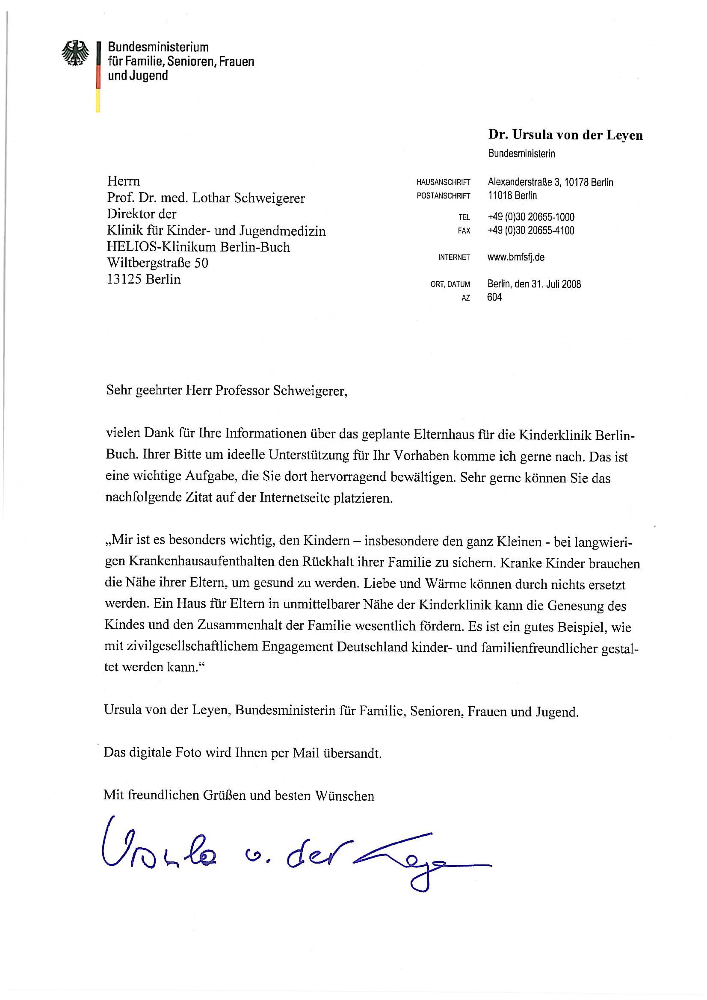
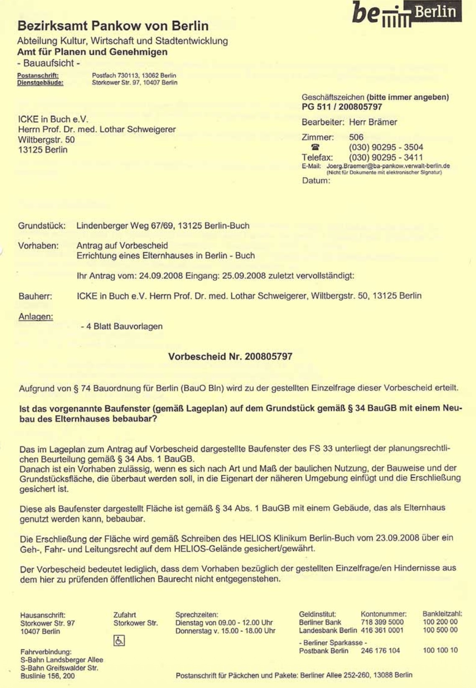
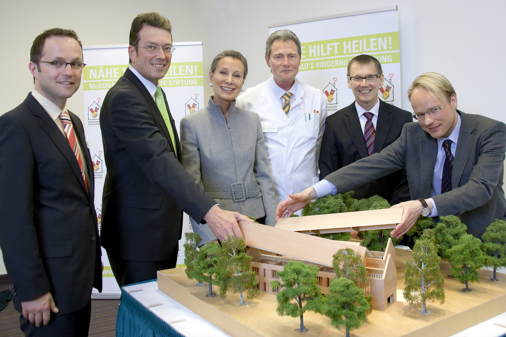
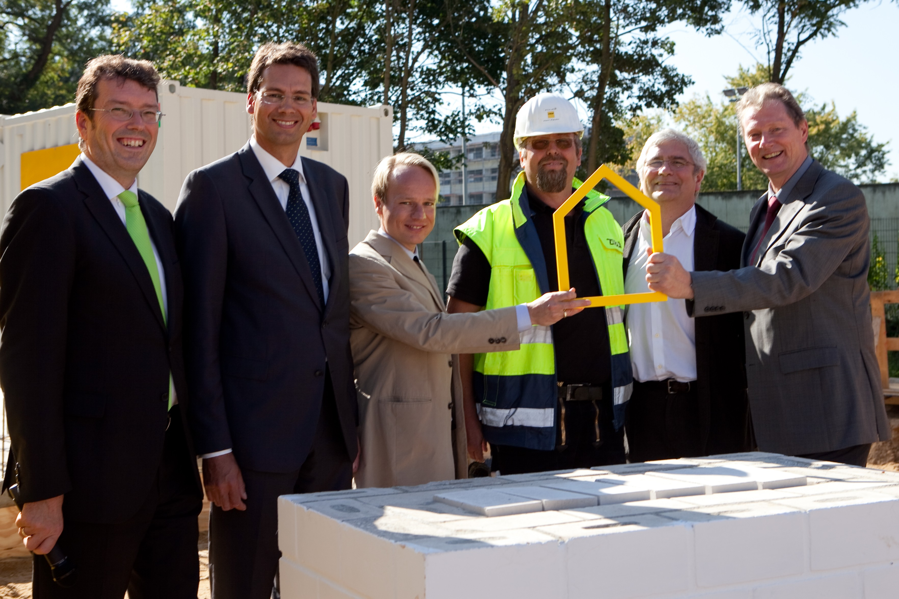
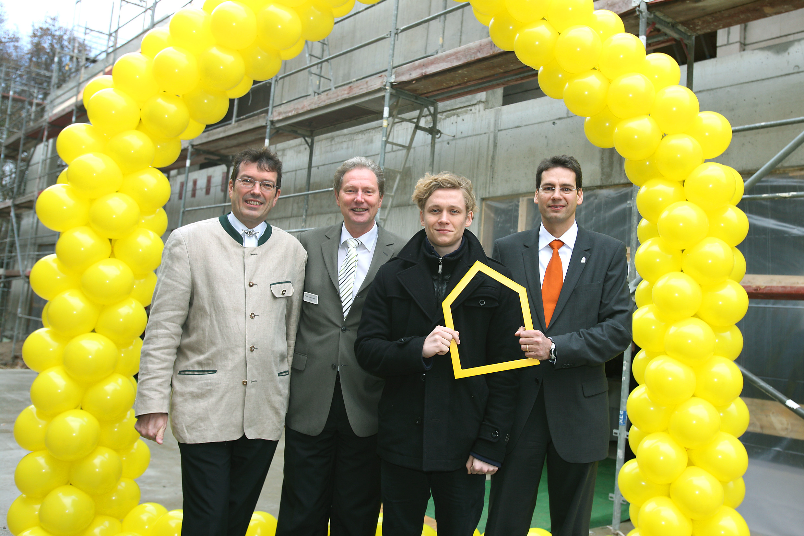
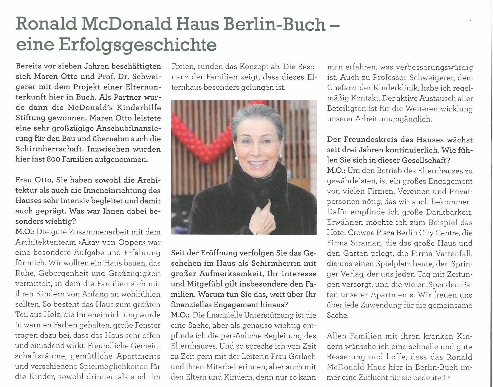

Die Idee eines Elternhauses entstand nicht erst nach dem Scheitern der Maren-Otto-Kinderklinik. Beide Projekte entwickelten sich von Anfang an parallel. Mir war schon früh klar geworden, dass eine moderne Kinderklinik mehr braucht als gute Medizin. Eltern schwer kranker Kinder verbringen oft viele Wochen oder sogar Monate an der Seite ihrer Kinder. Manche Familien kamen aus Brandenburg oder Mecklenburg-Vorpommern, später auch aus der Ukraine. Sie wohnten in kleinen Pensionen, Hotels oder bei Bekannten und pendelten täglich zwischen Unterkunft und Klinik. Für die Eltern war das eine zusätzliche Belastung, die sie in dieser ohnehin schwierigen Situation eigentlich nicht tragen sollten.
Also nahm ich Kontakt mit der McDonald's Kinderhilfe Stiftung auf. Dort sprach ich mit dem damaligen Vorstand Manfred Welzel und schilderte ihm unsere Idee. Er hörte aufmerksam zu und sagte anschließend ganz pragmatisch:
„Dafür brauchen Sie vier Dinge.“
Erstens ein Grundstück, das der Stiftung für 99 Jahre gegen einen symbolischen Euro zur Verfügung gestellt wird.
Zweitens muss dieses Grundstück in unmittelbarer Nähe der Kinderklinik liegen, damit die Eltern ihre Kinder jederzeit zu Fuß erreichen können.
Drittens brauchen Sie einen Grundstock an Spenden.
Und viertens brauchen Sie einen Architekten.
Eigentlich klang das alles ganz einfach. Tatsächlich hatten wir damals fast nichts davon. Das änderte sich schlagartig nach dem Ende der Maren-Otto-Kinderklinik. Maren Otto rief mich morgens um zehn Uhr an. Ich erinnere mich lebhaft. Und sagte: "Wissen Sie was, Herr Professor Schweigerer? Ich möchte, dass das Elternhaus nun schnellstens gebaut wird. Ich spende dafür eine Million Euro.“ Mir blieb die Spucke weg. Damit hatte ich nicht gerechnet. Ich wußte nicht, ob ich jetzt in die Luft springen oder singen sollte. Mit einem Mal war die Finanzierung nicht mehr das größte Problem. Gleichzeitig wusste ich aber auch, dass Geld allein noch kein Elternhaus baut.
Mir war schnell klar, dass wir auf mehreren Ebenen gleichzeitig arbeiten mussten. Zunächst brauchten wir Öffentlichkeit für das Projekt. Also beschlossen wir, eine eigene Internetseite aufzubauen. Das war leichter gesagt als getan, denn von Webseiten verstand ich damals überhaupt nichts. Ich setzte mich an den Computer, suchte im Internet nach Firmen, die Webseiten gestalteten, und telefonierte sie der Reihe nach ab. Immer wieder erklärte ich denselben Sachverhalt: „Ich suche jemanden, der für unser Elternhaus kostenlos eine Website erstellt.“
Es gab einige Absagen, doch irgendwann sagte Mark Bottke von der Firma elnimbo zu. Er hatte selbst Nachwuchs bekommen und fand die Idee der Elternhäuser überzeugend. So entstand unsere erste Website. Aus heutiger Sicht war sienichts Besonderes. Für uns war sie jedoch ein wichtiges Instrument. Zum ersten Mal konnten wir unsere Idee einer größeren Öffentlichkeit vorstellen und Menschen dafür begeistern. Kurt Biedenkopf, Rita Süssmuth, Wolfgang Thierse, Ursula von der Leyen, Christian Berkel, Wolfgang Joop und Andrea Sawatzki schrieben mir jeweils Dreizeiler, in welchen sie den Bau des Elternhauses unterstützten. Das setzte Mark Bottke dann auf die Webseite.
Parallel dazu begann ich, politische Unterstützung zu suchen. Ich sprach mit Vertretern der Parteien im Bezirk Pankow, mit dem Bürgermeister und vielen anderen Verantwortlichen. Erfreulicherweise stieß die Idee fast überall auf Zustimmung. Jeder verstand sofort, warum Eltern schwer kranker Kinder in unmittelbarer Nähe ihrer Kinder wohnen können sollten.
Schwieriger war die Grundstücksfrage. Ich ging immer wieder rund um die Kinderklinik spazieren und schaute mir jedes freie Gelände an, das überhaupt in Frage kommen konnte und für die Eltern fußläufig von der Klinik erreichbar war. Schließlich fand ich ein Grundstück, das aus meiner Sicht ideal war. Der Leiter des Amtes für Planen und Genehmigen, Dr. Michail Nelken, konnte sich für diesen Standort zunächst nicht begeistern und meinte, dort gäbe es kein Baurecht. Wir kamen auf diesem Weg nicht weiter.
Also ging ich mehrgleisig vor. Je mehr Menschen von unserem Projekt wussten, desto größer wurde die Unterstützung. Und je größer die Unterstützung wurde, desto schwieriger wurde es, das Elternhaus einfach abzulehnen. Ich konnte Lokalpolitiker und Personen des öffentlichen Lebens von unserem Vorhaben begeistern. Auch Klaus Wowereit. Und das kam so:

Wir hatten bereits entschieden, dass Maren Otto die Schirmherrin des Elternhauses sein solle. Sie nahm die Einladung dankbar an. In dieser Situation bot Maren an, gemeinsam mit mir zu Klaus Wowereit zu gehen. Die beiden kannten sich seit vielen Jahren und waren miteinander per Du. Also fuhren wir eines Tages ins Rote Rathaus. Das Gespräch begann ganz entspannt mit Smalltalk. Erst danach kamen wir auf das Elternhaus zu sprechen. Maren schilderte unsere Idee mit ihrer gewohnt ruhigen Art, ich ergänzte, weshalb dieses Haus für unsere Familien so wichtig war. Wowereit reagierte ausgesprochen positiv und sagte seine Unterstützung zu. Ob anschließend tatsächlich mit den zuständigen Stellen gesprochen wurde, weiß ich bis heute nicht. Jedenfalls bewegte sich die Sache danach spürbar.
Während wir um das Grundstück kämpften, fehlte uns noch immer ein Architekt. Auch hier ging ich ziemlich unbefangen - und ich würde heute sagen: naiv - vor. Ich war neu in Berlin und kannte niemanden. Also überlegte ich, welches Architekturbüro wohl in Frage käme. Ich hatte gelesen, dass Gerkan, Marg und Partner gerade den Berliner Hauptbahnhof gebaut hatten. Wenn sie einen Hauptbahnhof planen konnten, dachte ich mir, würden sie vielleicht auch ein Elternhaus entwerfen können. Also griff ich zum Telefon und fragte ganz offen, ob jemand bereit wäre, ein solches Projekt unentgeltlich zu planen.
Einige Zeit später erhielt ich einen Anruf von Christian von Oppen. Er hatte sich gerade gemeinsam mit seinem Partner Kemal Akay selbständig gemacht und ein eigenes Architekturbüro gegründet. Kurz zuvor war er selbst Vater geworden. Vielleicht war das einer der Gründe, weshalb ihn unsere Idee sofort ansprach. Jedenfalls sagte er ohne langes Zögern zu. Damit hatten wir plötzlich auch einen Architekten.

Aber eine harte Nuss mussten wir noch knacken. Es gab keine Baugenehmigung. Der Besuch bei Wowereit hatte vielleicht den Ausschlag gegeben. Oder unsere Öffentlichkeitsarbeit. Wie auch immer: Plötzlich gab es eine Baugenehmigung.
Nun begann die Planungsarbeit. In den folgenden Monaten verbrachten wir viele Stunden miteinander. Christian von Oppen, Kemal Akay, Maren Otto und ich zeichneten, verwarfen Ideen und entwickelten immer neue Entwürfe. Natürlich wollten wir das Rad nicht neu erfinden. Gemeinsam besuchten wir deshalb unter anderem das Elternhaus der McDonald's Kinderhilfe Stiftung am Universitätsklinikum in Homburg an der Saar. Dort schauten wir uns an, was sich im Alltag bewährt hatte und welche Ideen wir für Berlin übernehmen konnten.
Im Laufe der Planung entstanden insgesamt fünf verschiedene Modelle. Eines davon sah sogar vor, das Elternhaus mit einer Mauer deutlich von der Kinderklinik abzutrennen. Als Maren Otto diesen Entwurf sah, schlug sie spontan die Hände über dem Kopf zusammen.
„Eine Mauer? In Berlin?“
Mehr musste sie nicht sagen. Der Vorschlag war vom Tisch.

Interessanterweise hatte unsere gemeinsame Reise mit einem einzigen Foto begonnen. Ganz am Anfang hatte Christian von Oppen uns ein modernes Holzhaus aus Finnland gezeigt. Es stand in der Dämmerung, warm beleuchtet und strahlte genau die Atmosphäre aus, die wir uns für unser Elternhaus wünschten. Während der folgenden Monate entfernten wir uns immer weiter von dieser ersten Idee. Wir entwickelten neue Konzepte, veränderten Fassaden und diskutierten unzählige Details.
Als schließlich alle fünf Modelle auf dem Tisch lagen, stellten wir überrascht fest, dass uns das erste Konzept immer noch am besten gefiel. Am Ende bauten wir genau dieses Haus.
Mit der endgültigen Entscheidung ging es plötzlich erstaunlich schnell. Aus Plänen wurden Fundamente, aus Fundamenten Mauern und schließlich ein Gebäude. Ich ging in dieser Zeit oft zur Baustelle und konnte beobachten, wie aus einer Idee langsam Wirklichkeit wurde.

Das Richtfest war ein besonderer Tag. Die McDonald's Kinderhilfe Stiftung hatte Matthias Schweighöfer als Schirmherrn gewonnen. Gemeinsam mit dem damaligen Bürgermeister des Bezirks Pankow feierten wir auf der Baustelle, dass der Rohbau fertiggestellt war. Für mich war das weniger ein gesellschaftlicher Termin als vielmehr die Gewissheit, dass unser Projekt tatsächlich gelingen würde.

Im Jahr 2012 wurde das Elternhaus schließlich eröffnet. Bundesgesundheitsminister Daniel Bahr kam nach Berlin-Buch. Maren Otto war selbstverständlich ebenfalls dabei. Vertreter der McDonald's Kinderhilfe Stiftung, unseres Fördervereins, der Politik und viele Wegbegleiter waren gekommen. Ich durfte erzählen, wie das Projekt entstanden war, und bedankte mich bei allen, die daran mitgewirkt hatten.

Nach dem offiziellen Teil blieb ich noch einen Augenblick allein zurück. Ich ging den kurzen Weg vom Elternhaus hinüber zur Kinderklinik. Genau das hatte Manfred Welzel bei unserem ersten Gespräch gefordert. Das Elternhaus musste fußläufig erreichbar sein. Eltern sollten Tag und Nacht ohne Bus, Taxi oder Auto bei ihren Kindern sein können. Jetzt ging ich diesen Weg selbst.
Für die meisten Besucher war das Elternhaus einfach ein neues Gebäude. Für mich war es die Summe unzähliger Telefonate, Besprechungen, Rückschläge und Begegnungen mit Menschen, die bereit gewesen waren, aus einer guten Idee Wirklichkeit werden zu lassen.
Damals ahnte ich noch nicht, welche Bedeutung dieses Haus für viele Familien einmal haben würde.